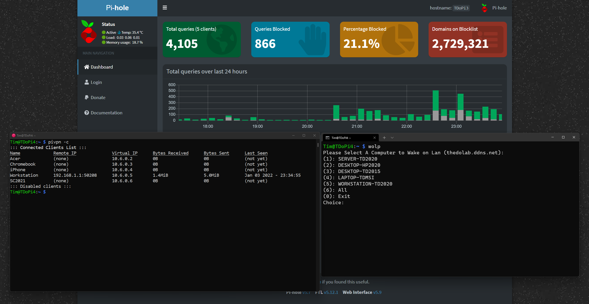

TheDoLab has Three Primary Network Features:
1. 📶 Self-Contained Web Hosting for TheDoLab with an Nginx Server on an Asus Chromebox (turned Linux)
2. 🍓 Pihole (Local DNS: 192.168.1.208) on TDoPi3 (Raspberry Pi 3)
3. 🐲 Wireguard VPN on TDoPi4 (Raspberry Pi 4)
Combo Blocks Most Ads when Connected to the VPN 🔥
